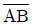
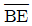
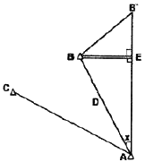
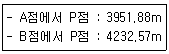
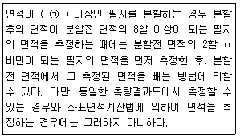
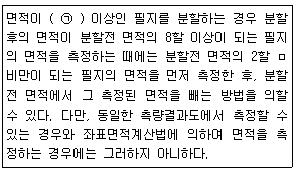
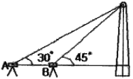
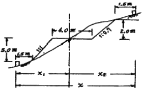
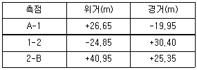

지적기사 (2008-07-27 기출문제)
1과목: 지적측량
1. 임의의 두 점 간의 경사거리와 조준의의 경사분획을 측정한 결과가 아래와 같다면, 두 점 간의 수평거리는? (경사거리 : 82.1m, 경사분획 : +6.5)
- 79.9m
- 80.9m
- 81.9m
- 82.9m
(정답률: 알수없음)

2. A. B 두 점의 좌표가 각각 A(100m, 200m), B(300m, 100m)인 두 기지각점을 연결하는

의 방위각은?- 333° 26‘ 06“
- 153° 26‘ 06“
- 206° 33‘ 54“
- 26° 33‘ 54“
(정답률: 알수없음)
3. A, B점간 거리를 50m 줄자로 측정하여 250m를 얻었다. 이 줄자를 표준줄자와 비교하니 5mm가 줄어 있었다면 정확한 거리는?
- 249.975m
- 248.750m
- 250.025m
- 250.250m
(정답률: 알수없음)
4. ∠CAB를 측정함에 있어, B점의 중심을 시준하지 못하여 B'점을 시준한 때에 수평각 점표귀심을 계산하기 위한 시준점의 편심관측 보정량(x)은? (단,

=1.50m, D=2km)
- 1‘ 10“
- 2‘ 35“
- 3‘ 58“
- 4‘ 40“
(정답률: 알수없음)
5. 광파기측량방법에 의하여 다각망도선법으로 지적삼각보조측량을 시행할 때 1도선의 최대 거리는?
- 1km
- 2km
- 3km
- 4km
(정답률: 알수없음)
6. 다음 중 지적삼각측량에 대한 설명으로 옳지 않은 것은?
- 지적삼각점은 유심다각망, 삽입망, 사각망, 삼각쇄 또는 삼각망으로 구성하여야 한다.
- 삼각형의 각 내각은 항상 30° 이상 120° 이하로 한다.
- 지적삼각측량을 하는 때에는 미리 지적삼각점표지를 설치하여야 한다.
- 지적삼각측량은 삼각점과 지적삼각점을 기초로 한다.
(정답률: 알수없음)
7. 지적삼각측량에서 A, B 두 기지점으로부터 동일한 소구점 P의 표고를 산출함에 있어 기지점에서 소구점까지의 평면 거리가 다음과 같을 때, 산출표고의 허용교차는 얼마인가?

- 30.9cm
- 35.9cm
- 40.9cm
- 45.9cm
(정답률: 알수없음)
8. 경계점좌표등록부를 비치하는 지역에서 2등 도선으로 지적도근측량을 실시한 결과, 각 측선의 수평거리 총합계가 1,550m 이었다. 이 도선의 연결오차의 허용범위는? (단, 지적도의 축척은 1/1,000임)
- 20cm 이하
- 30cm 이하
- 39cm 이하
- 59cm 이하
(정답률: 알수없음)
9. 경계점좌표등록부 시행지역에서 경계점의 측량성과와 검사성과와의 연결교차의 허용범위는?
- 0.10m 이내
- 0.15m 이내
- 0.20m 이내
- 0.25m 이내
(정답률: 알수없음)
10. 경위의측량방법에 의한 세부측량의 관측 및 계산에 대한 설명이 옳지 않은 것은?
- 수평각은 2배각의 배각법이나 1대회 방향관측법으로 관측한다.
- 관측은 20초독 이상의 경위의를 사용하여야 한다.
- 방사법 또는 교회법에 의한다.
- 연직각의 관측은 정반으로 1회 관측한다.
(정답률: 알수없음)
11. 1/15,000 지형도에서 36cm2인 토지를 경지정리 하고자 할 때 지상에서의 실제면적은?
- 90ha
- 900ha
- 1200ha
- 2000ha
(정답률: 알수없음)
12. 축척변경시행지역에서 경위의측량방법에 의한 세부측량을 실시할 경우, 측량결과도는 얼마의 축척으로 작성하여야 하는가?
- 1/500
- 1/1000
- 1/3000
- 1/6000
(정답률: 알수없음)
13. 면적의 측정에 대한 설명으로 틀린 것은? (단, M : 축척분모, F : 2회 측정한 면적의 평균)
- 경위의측량방법으로 세부측량을 한 지역의 면적측정은 경계점좌표에 의한다.
- 전자면적측정기에 의하여 면적측정을 할 경우에 그 허용면적은 0.0262M√F의 식을 적용한다.
- 전자면적측정기에 의한 측정면적은 1천분의 1제곱미터까지 계산하여 10분의 1제곱미터 단위로 정한다.
- 면적을 측정하는 경우 도곽선의 길이에 0.5mm 이상의 신축이 있을 때에는 이를 보정하여야 한다.
(정답률: 알수없음)
14. 도면에 등록하는 경계, 행정구역선(동ㆍ리), 지적측량기준점의 제도폭이 옳게 짝지어진 것은?
- 0.1mm-0.2mm-0.4mm
- 0.1mm-0.4mm-0.2mm
- 0.1mm-0.2mm-0.2mm
- 0.1mm-0.1mm-0.2mm
(정답률: 알수없음)
15. 다음 중 지적측량기준점에 해당하지 않는 것은?

- 지적보조점
- 지적도근점
- 지적삼각점
- 지적위성기준점
(정답률: 알수없음)
16. 면적측정의 방법과 관련하여 ㉠에 들어갈 알맞은 수치는?

- 2,000m2
- 3,000m2
- 4,000m2
- 5,000m2
(정답률: 알수없음)
17. 도면의 재삭성시 경계가 불분명한 경우에는 무엇을 참고하여 제도하는가?
- 대장
- 측량결과도
- 도상좌표
- 지상경계
(정답률: 알수없음)
18. 경위의측량방법과 촉판측량방법에 의한 세부측량을 시행할 경우, 측량준비도의 공통적인 기재사항이 아닌 것은?
- 측량대상 토지의 지번 및 지목
- 인근 토지의 경계점 좌표 및 경계선
- 행정구역선과 그 명칭
- 도곽선과 그 수치
(정답률: 알수없음)
19. 다음 중 지적도의 축척이 1/600인 지역의 면적결정방법에 대한 설명이 옳은 것은?
- 산출면적이 123.152일 때는 123.2m2로 한다.
- 산출면적이 125.552일 때는 126m2로 한다.
- 산출면적이 135.252일 때는 135.3m2로 한다.
- 산출면적이 145.552일 때는 145.5m2로 한다.
(정답률: 알수없음)
20. 지적삼각보조측량에서 지적삼각보조점의 망구성 방식은?
- 유심다각망 또는 교점다각망
- 사각망 또는 교점다각망
- 삼각쇄 또는 교점다각망
- 교회망 또는 교점다각망
(정답률: 알수없음)
2과목: 응용측량
21. 레벨(Level) 수준기 기포관의 곡률반경을 알기 위하여 10m 떨어진 곳의 표척(Staff)을 수평으로 시준하고, 기포를 2눈금 이동시켜서 다시 표척(Staff)을 시준하니 4cm의 이동이 있었다면 이 때 기포관의 곡률반경을 얼마인가? (단, 기포관 1눈금=2mm)
- 1.0m
- 1.5m
- 2.0m
- 2.3m
(정답률: 알수없음)
22. 지형도의 축척과 등고선 주곡선의 간격이 서로 잘못 짝지어진 것은?
- 1/1000-1m
- 1/10000-10m
- 1/50000-20m
- 1/5000-5m
(정답률: 알수없음)
23. 굴뚝의 높이를 측정하기 위하여 A, B점에서 굴뚝 끝의 경사각을 관측하여 A점에서는 30°, B점에서는 45°를 얻었다. 이 때 굴뚝의 표고는? (단, AB의 거리는 22m, A, B 및 굴뚝의 하단은 일직선상에 있고, 기계고(I, H)는 A, B 모두 1m 이다.)

- 29m
- 30m
- 31m
- 35m
(정답률: 알수없음)
24. 다음 그림에서 노선의 용지폭 x는 얼마인가? (단, 노폭=6.0m, 절취경사=1:0.7, 성토고=5.0m, 성토경사=1.1, 여유폭=1.5m, 절취고=2.0m)

- 5.9m
- 9.5m
- 16.9m
- 15.4m
(정답률: 알수없음)
25. 곡선 반지름 R=80m, 클로소이드 곡선길이 L=40m일 때 클로소이드 곡선의 매개변수 A는?
- 15.75m
- 32.78m
- 40.25m
- 56.57m
(정답률: 알수없음)
26. 직선 터널을 뚫기 위해 트래버스 측량을 실시한 결과 다음과 같은 값을 얻었다. 터널 중심선 AB의 방위각은?

- 9° 56‘ 37“
- 50° 03‘ 22“
- 219° 57‘ 49“
- 320° 02‘ 11“
(정답률: 알수없음)
27. 사진상에서 탑의 높이를 측정하기 위하여 탑의 상부와 하부의 시차를 측정한 결과, 시차차가 1.83mm, 촬영고도 980m, 주점 기선 길이가 80mm였다면 이 탑의 높이는?
- 22.4m
- 30.2m
- 52.0m
- 72.6m
(정답률: 알수없음)
28. 사진지도에서 축척을 결정할 때 경사가 5grade이었다. 수직 사진의 축척과 같게 하기 위한 기준으로 가장 좋은 것은?
- 연직점
- 등각점
- 주점
- 중심점
(정답률: 알수없음)
29. 다음 중 인공위성의 궤도요소에 포함되지 않는 것은?
- 승교점의 적경
- 궤도 경사각
- 관측점의 위도
- 궤도의 이심률
(정답률: 알수없음)
30. 단곡선 설치에서 철도, 도로 등의 설치에 가장 일반적으로 사용되는 설치방법은?
- 지거설치법
- 편각설치법
- 중앙종거법
- 중거에 의한 설치법
(정답률: 알수없음)
31. 지형표시 방법의 하나로 단선상의 선으로 지표의 기복을 나타내는 것으로 일명 게바법이라고도 하는 것은?
- 음영법
- 단채법
- 등고선법
- 영선법
(정답률: 알수없음)
32. A점의 표고가 100.56m이고, A와 B점의 지표에 세운 표척의 관측값이 각각 a=+5.5m, b=+2.3m이라 할 때 B점의 표고는?
- 97.36m
- 101.46m
- 103.76m
- 108.36m
(정답률: 알수없음)
33. 회전주기가 일정한 위성을 이용한 원격탐사기법이 가지는 특징으로 틀린 것은?
- 짧은 시간에 넓은 지역을 동시에 측정할 수 있으며 반복측정이 주기적으로 가능하여 대상물의 변화를 감지할 수 있다.
- 다중파장대에 의한 지구표면의 다양한 정보의 취득이 용이하며 측정자료가 수치로 가록되어 판독에 있어서 자동적인 직업수행이 가능하고 정량화하기 쉽다.
- 관측이 넓은 시야각으로 행해지므로 얻어진 영상은 중심투영상에 가깝다.
- 탐사된 자료가 즉시 이용될 수 있으며 재해 및 환경문제의 해결에 유용하게 이용될 수 있다.
(정답률: 알수없음)
34. 교각(I)이 60°, 곡선의 반지름(R)이 200m, 중심말뚝 거리(ℓ)가 20m일 때 시단현의 편각은? (단, 노선기점에서 교점까지의 추가거리=630.29m)
- 0° 24‘ 31“
- 0° 34‘ 31“
- 0° 44‘ 31“
- 0° 54‘ 31“
(정답률: 알수없음)
35. 다음 중 항공사진 판독의 요소가 아닌 것은?
- , 크기와 형태
- 색조와 모양
- 질감과 음영
- 원감과 소실점
(정답률: 알수없음)
36. 노선측량의 작업순서로 옳은 것은?
- 계획조사측량-노선선정-실시설계측량-공사측량-세부측량-용지측량
- 노선선정-계획조사측량-용지측량-세부측량-실시설계측량-공사측량
- 계획조사측량-용지측량-노선측량-실시설계측량-세부측량-공사측량
- 노선선정-계획조사측량-실시설계측량-세부측량-용지측량-공사측량
(정답률: 알수없음)
37. 지형도를 이용하여 작성할 수 있는 자료에 해당 되지 않는 것은?
- 종ㆍ횡단면도 작성
- 표고에 의한 평균유속 측정
- 절토 및 성토범위의 결정
- 등고선에 의한 체적 계산
(정답률: 알수없음)
38. 지하시설물의 유지관리에 대한 설명으로 옳지 않은 것은?
- 자료구축 이후 지속적이며 표준화된 갱신이 이루어져야 한다.
- 지하시설물의 특성에 따른 모니터링 체계를 통합함이 효율적이다.
- 일관성 있고 체계적인 자료의 유지관리가 이루어져야 한다.
- 지하시설물의 관측방법은 직접 시추를 통한 방법이 거의 유일한 방법이다.
(정답률: 알수없음)
39. 입체영상의 영상접합(image mafching)에 대한 설명으로 옳은 것은?
- 경사와 축척을 바로 수정하여 축척을 통일시키고 변위가 없는 수직 사진으로 수정하는 작업
- 한 영상의 위치에 실제의 객체가 다른 영상의 어느 위치에 형성되었는가를 발견하는 작업
- 사진상의 주점이나 표정점 등 제점의 위치를 인접한 사진 상에 옳기는 작업
- 지표의 상태를 파악하기 위하여 사진에 찍혀 있는 것이 무엇인지를 판별하는 작업
(정답률: 알수없음)
40. GPS를 이용한 측지작업에 사용되는 캐리어관측법(carrier phase measuremeent)과 관계가 가장 먼 것은?
- 연속위상관측(continuous phase observable)
- 신호제곱처리(signal squaring)방법
- 헤테로다인수신(heterodyning)방법
- 교차상관관계(cross correlation)방법
(정답률: 알수없음)
3과목: 토지정보체계론
41. 지적전산화의 목적으로 가장 거리가 먼 것은?
- 지적민원처리의 신속성
- 전산화를 통한 중앙통제
- 업무 처리의 능률 및 정확도 향상
- 토지관련 정책자료의 다목적 활용
(정답률: 알수없음)
42. 다음 중 Metadata에 대한 성명으로 옳지 않은 것은?
- 일관성이 있는 데이퍼를 이용자에게 제공할 수 있다.
- 데이터가 색인화 되어 있어 사용하기에 편리하다.
- 정보의 공유를 극대화한다.
- 대용량의 데이터를 구축하는 것을 불가능하다.
(정답률: 알수없음)
43. 지적전산자료를 이용ㆍ활용하는데 따른 승인권자에 속하는 것은?
- 국토지리정보원장
- 국토해양부장관
- 대한지적공사장
- 교육과학기술부장관
(정답률: 알수없음)
44. DBMS방식의 자료관리의 장점이 아닌 것은?
- 시스템 구성이 파일방식에 비해 단순하다.
- 중앙제어가 가능하다.
- 자료의 중복을 최대한 감소시킬 수 있다.
- DB내의 자료는 다른 사용자와의 호환이 가능하다.
(정답률: 알수없음)
45. GIS의 자료 분석 과정 중 도형 자료와 속성자료가 각긱 구축된 레이어 간의 정보를 합성하거나 수학적 변환기능을 이용하여 정보를 통합하는 분석 방법은?
- 중첩분석
- 표면분석
- 합성분석
- 검색분석
(정답률: 알수없음)
46. 객체지향형데이터베이스 관리체계(OODBMS)의 특징에 대한 설명이 옳지 않은 것은?
- 데이터베이스의 관리와 수정이 불편하며 단순한 형태의 데이터만을 저장할 수 있다.
- 관계형데이터모델의 단점을 보완할 수 있는 것으로 등장하였다.
- 객체지향형데이터모델은 CAD와 GIS등의 분야에서 데이터베이스를 구축할 때 사용할 수 있다.
- 특정 객체 간에는 데이터와 그 조작 방법을 공유할 수 있다.
(정답률: 알수없음)
47. 지적전산자료의 이용에 대한 심사신청을 받은 관계 중앙행정기관의 장이 심사하는 사항에 해당하지 않는 것은?
- 사료의 목적 외 사용방지 및 안전관리 대책
- 개인의 사생활 침해 여부
- 자료의 이용에 따른 사용료 납부 방법
- 신청내용의 타당성ㆍ적합성ㆍ공익성
(정답률: 알수없음)
48. 토지정보 입력시 스캐닝에 의한 방법에 대한 설명이 옳지 않은 것은?
- 지적도면 자료를 입력하는 방법이다.
- 지도상의 정보를 신속하게 입력할 수 있다.
- 디지타이저를 이용한 입력방법 보다 편리하다.
- 벡터 방식의 입력방법이다.
(정답률: 알수없음)
49. 다음 중 좌표가 입력되어야 할 곳에 못 미치게 입력되어 폴리곤이 폐합되지 않게 만드는 오류에 해당하는 것은?
- 오버슈트(overshoot)
- 언더슈트(undershoot)
- 슬리버(sliver)
- 스파이크(spike)
(정답률: 알수없음)
50. 데이터베이스의 구조 중 트리(Tree) 형태의 구조로 데이터들이 구성되어 기록추가와 삭제가 용이한 반면, 지시자에 의해 설정된 경로만을 통해야 자료에 접근할 수 있는 단점을 가진 것은?
- 평면구조
- 계층구조
- 조직망구조
- 관계구조
(정답률: 알수없음)
51. 다음 중 벡터방식의 자료구조의 표현과 관계가 먼 것은?
- 점
- 선
- 격자
- 면
(정답률: 알수없음)
52. 벡터데이터의 장점이 아닌 것은?
- 위상에 관한 정보가 제공된다.
- 원격탐사 자료와의 연계처리가 용이하다.
- 객체별로 선택할 수 있다.
- 자료갱신과 유지관리가 편리하다.
(정답률: 알수없음)
53. 메타데이터에 포함되는 기본요소에 해당하지 않는 것은?
- 데이터의 질
- 메타데이터의 작성자 및 작성일지
- 메타데이터의 유통과정
- 공간참조를 위해 사용된 지도투영법의 명칭
(정답률: 알수없음)
54. 다음 중 래스터자료를 벡터자료로 변환하는 것을 무엇이라 하는가?
- 벡터라이징
- 래스터라이징
- 스캐닝
- 디지타이징
(정답률: 알수없음)
55. 지적도면을 수치파일로 작성하는 경우 레이어로 지정할 수 없는 데이터는?
- 필지경계
- 지번
- 도곽선
- 소유자
(정답률: 알수없음)
56. 토지정보체계의 구성요소에 해당하지 않는 것은?
- 하드웨어
- 데이터베이스
- 보안시스템
- 전문인력
(정답률: 알수없음)
57. 다음 중 취득된 공간자료의 자료구조 포맷이 다른 하나는?
- DXF
- BMP
- JPEG
- TIFF
(정답률: 알수없음)
58. 격자자료를 압축저장하는 방법에 해당하지 않는 것은?
- Run-length code
- Block code
- Chain code
- Spaghetti code
(정답률: 알수없음)
59. 한국토지정보시스템(KLIS)에 대한 설명이 옳은 것은?
- 토지관련 정보를 공동활용하기 위해 구축한 것이다.
- PBLIS와 LIS를 통합 구축한 것이다.
- 지하시설물 관리를 중심으로 구축한 것이다.
- 행정안전부에서 독자적으로 구축한 시스템이다.
(정답률: 알수없음)
60. 다음 중 데이터교환표준(SDTS:Spatial Data Transfer Standard)의 특징에 대한 설명이 옳지 않은 것은?
- 자료모델로는 Geometry와 Topology로 구별하여 정의하고 있다.
- 자료를 교환하기 위한 파일의 물리적 포맷을 말한다.
- NGIS의 데이터 교환 표준화로 제정되었다.
- 다양한 공간데이터의 교환 및 공유가 가능하다.
(정답률: 알수없음)
4과목: 지적학
61. 우리나라의 토지에 관한 권리 등록 공시문서가 아닌 것은?
- 입안
- 양안
- 토지증명부
- 문기
(정답률: 알수없음)
62. 다음 중 토지조사법에 의한 조사 당시 지적도에 등록하지 않고 지목만 해당개소에 표시하였던 비과세지에 해당하지 않는 것은?
- 도로
- 구거
- 성첩
- 분묘지
(정답률: 알수없음)
63. 다음 중 지목을 설정하는 가장 주된 기준은?
- 토지의 자연상태
- 토지의 사용목적
- 토지의 수익성
- 토지의 성질
(정답률: 알수없음)
64. 지적공부에 등록된 경계의 특성으로서 경계불가분의 원칙이 적용되는 가장 큰 이유는?
- 면적의 크기에 따르므로
- 설치자의 소속으로 하기 때문에
- 경계의 중앙 선택 원칙 때문에
- 경계선은 길이와 위치만 존재하기 때문에
(정답률: 알수없음)
65. 개개의 토지를 중심으로 토지 등록부를 편성하는 것으로, 우리나라의 토지대장에서 사용하는 등기의 편성유형은?
- 물적 편성주의
- 인적 편성주의
- 연대적 편성주의
- 물적ㆍ인적 편성주의
(정답률: 알수없음)
66. 우리나라의 양지아문(量地衙門)이 설치된 시기는?
- 1717년
- 1989년
- 19⑤년
- 1910년
(정답률: 알수없음)
67. 다음 중 수치지적과 도해지적에 관한 설명이 옳지 않은 것은?
- 수치지적을 사용하는 경우 도해도면이 따로 필요하지는 않다.
- 수치지적은 도해지적보다 정밀하게 경계를 표시할 수 있다.
- 도해지적은 축척에 따라 허용오차가 달라지는 단점이 있다.
- 도해지적은 토지 경계점을 도해적으로 측정하여 표시하는 것이다.
(정답률: 알수없음)
68. 전지(田地)를 측량할 때 정방형의 눈들을 가진 그물을 사용하여 전지가 그물 속에 들어온 눈을 계산하여 면적을 산출하는 방법은?
- 방전제
- 망척제
- 방량제
- 결부제
(정답률: 알수없음)
69. 양전법 개정을 위한 새로운 양전방안으로, 정전제의 시행을 전제로 하는 방량법과 어린도법을 주장한 학자는?
- 정양욕
- 서유구
- 이기
- 정약전
(정답률: 알수없음)
70. 지표면의 형태, 자형의 고저, 수륙의 분포상태 등 땅이 생긴 모양에 따라 결정하는 지목은?
- 토성지목
- 지형지목
- 용도지목
- 복식지목
(정답률: 알수없음)
71. 다음 중 토지조사사업시의 사정(査定)에 대한 설명이 옳지 않은 것은?
- 토지의 소유자 및 그 강계를 확정하는 행정처분이다
- 토지의 강계는 지적도에 등록된 토지의 경계선인 강계선이 대상이었다.
- 사정권자는 당시 고등토지위원회의 장이었다.
- 사정을 하기에 앞서 사정권자는 지방토지위원회의 자문을 받았다.
(정답률: 알수없음)
72. 지적재조사의 목적과 가장 거리가 먼 것은?
- 지적불부합지 문제의 해소
- 합리적인 국가 경계 설정
- 토지의 경계 복원력 향상
- 지적공부의 질적 향상
(정답률: 알수없음)
73. 다음 중 근대지적의 시초로 과세지적이 대표적인 나라는?
- 일본
- 독일
- 프랑스
- 네덜란드
(정답률: 알수없음)
74. 다음 지적불부합지의 유형 중 대단위 지역의 이동측량시 발생한 측판점 위치결정의 오류로 인해 발생하는 것은?
- 중복형
- 공백형
- 편위형
- 불규칙형
(정답률: 알수없음)
75. 부여의 행정구역제도로서 국도를 중심으로 영토를 사방으로 구획하는 토지구획방법은 무엇인가?
- 사출도
- 사표도
- 계면도
- 휴도
(정답률: 알수없음)
76. 법률체제를 갖춘 우리나라 최초의 지적법으로, 이 법의 폐지 이후 대부분의 내용이 토지조사령에 계승된 것은?
- 토지조사법
- 삼림법
- 지세법
- 조선임야조사령
(정답률: 알수없음)
77. 국가의 재원을 확보하기 위한 제적제도로서 면적본위 지적제도라고도 하는 것은?
- 과세지적
- 법지적
- 다목적지적
- 경제지적
(정답률: 알수없음)
78. 토지의 권원을 명확히 하고 토지거래에 따른 변동사항 정리를 용이하게 하여 권리증서의 발행을 손쉽게 하고자 창안된 토지등록제도는?
- 날인등록제도
- 소극적등록제도
- 토렌스시스템
- 토지정보시스템
(정답률: 알수없음)
79. 다목적 지적의 구성요건에 해당하지 않는 것은?
- 측지기준망
- 기본도
- 지적도
- 측량계산부
(정답률: 알수없음)
80. 일반적으로 양안에 기재된 사항에 속하지 않는 것은?
- 신구 토지 소유자, 토지 가격
- 지번, 면적
- 측량 순서, 토지 등급
- 토지형태, 사표(四標)
(정답률: 알수없음)
5과목: 지적관계법규
81. 다음 중 경계점좌표등록부의 등록사항이 아닌 것은?
- 토지의 소재
- 좌표
- 지번
- 지목
(정답률: 알수없음)
82. 다음 중 토지소유자가 지적공부의 등록사항에 대한 정정신청을 함으로 인해 경계 또는 면적의 변경을 가져오는 경우 정정사유를 기재한 신청서와 함께 첨부하여 소관청에 제출하여야 할 서류는?
- 등록사항정정측량성과도
- 토지대장등본
- 인접 토지소유자의 승낙서
- 확정판결서 정본
(정답률: 알수없음)
83. 다음 중 미등기토지의 소유권 보존등기를 신청할 수 없는 자는?
- 토지대장에 소유자로 등록되어 있는 것을 증명하는 자
- 판결에 의하여 자기의 소유권을 증명하는 자
- 수용으로 인하여 소유권 취득을 증명하는 자
- 소관청의 직원이 현지를 확인하여 확인증명을 받은 자
(정답률: 알수없음)
84. 부동산등기법 상 토지소유권의 등기명의인이 1개월 이내에 등기신청을 하여야 할 의무가 없는 경우는?
- 토지의 분합
- 토지의 지번 변경
- 토지의 면적증감
- 토지 지목의 변경
(정답률: 알수없음)
85. 지적정보센터에서 관리하는 전산자료가 아닌 것은?
- 지적전산자료
- 공시지가표준가격전산자료
- 전국주택표준가격전산자료
- 지적위성기준점관측자료
(정답률: 알수없음)
86. 축척변경시행지역 안의 토지는 언제 토지의 이동이 있는 것으로 보는가?
- 축척변경 시행공고일
- 축척변경 청산금 교부일
- 축척변경 확정공고일
- 축척변경 승인신청일
(정답률: 알수없음)
87. 등기원인을 증명하는 서면을 제출할 수 없는 경우 이에 갈음하여 제출하여야 할 서면은?
- 성년 2인 이상의 보증서
- 신청서의 부본
- 등기의무자의 권리에 관한 등기필증
- 등기 의무자의 주소, 성명 및 인감증명
(정답률: 알수없음)
88. 다음 중 토지를 합병하는 경우, 합병 후 토지의 지번설정 방법에 대한 설명으로 가장 옳은 것은?
- 합병대상 지번 중 선순위의 것만을 그 지번으로 한다.
- 합병대상 지번 중 본번만으로 된 지번을 그 지번으로 한다.
- 합병대상 지번 중 임의의 지번을 그 지번으로 한다.
- 합병대상 지번 중 선순위의 지번을 그 지번으로 하되, 본번으로 된 지번이 있는 때에는 본번 중 선순위의 것을 그 지번으로 한다.
(정답률: 알수없음)
89. 다음 중 지목이 잡종지에 해당되지 않는 것은?
- 오물처리장
- 어린이놀이터
- 수신소
- 도축장
(정답률: 알수없음)
90. 지적법상 토지의 이동사항 중 신청기간이 다른 하나는?
- 등록전환신청
- 지목변경신청
- 신규등록신청
- 바다로 된 토지의 등록말소신청
(정답률: 알수없음)
91. 다음 중 토지소유자가 소관청에 토지의 분할을 신청할 수 있는 경우에 해당하지 않는 것은?
- 소유권이전, 매매 등을 위하여 필요한 경우
- 토지이용상 불합리한 지상경계를 시정하기 위한 경우
- 도시관리계획선에 따라 토지를 분할하는 경우
- 지적공부에 등록된 1필지의 일부가 형질변경 등으로 용도가 다르게 된 경우
(정답률: 알수없음)
92. 다음 중 지적공부의 복구에 관한 관계료가 아닌 은?
- 지적공부 집계부
- 토지이동정리결의서
- 측량결과도
- 법원의 확정판결서 사본
(정답률: 알수없음)
93. 다음 지적기술자의 징계기준과 관련하여 자격취소에 해당되지 않는 경우는?
- 지적기술자가 고의로 지적측량을 잘못한 경우
- 지적측량업자인 지적기술자가 영업정지기간 중에 지적측량업을 영위한 경우
- 지적기술자가 중대한 과실로 지적측량을 잘못한 경우
- 지적기술자가 자격정지기간 중에 지적측량업무를 행한 경우
(정답률: 알수없음)
94. 다음 중 소관청이 토지이동정리결의서를 작성해야 하는 경우가 아닌 것은?
- 지적공부가 일부 멸실ㆍ훼손되어 이를 복구하는 경우
- 토지소유자의 변동이 있는 경우
- 도시개발사업으로 인한 토지의 이동이 있는 경우
- 지적공부에 등록된 지번을 변경할 필요가 없다고 인정하여 도지사의 승인을 얻어 지번부여지역안의 일부에 대하여 지번을 새로이 부여하는 경우
(정답률: 알수없음)
95. 국토의 계획 및 이용에 관한 법률의 용도지역을 설명한 것으로 옳지 않은 것은?
- 도시지역은 인구와 산업이 밀집되어 있거나 밀집이 예상되어 당해 지역에 대해 체계적인 개발ㆍ정비ㆍ관리ㆍ보전 등이 필요한 지역을 말한다.
- 관리지역은 도시지역의 인구와 상업을 수용하기 위해 도시지역에 준하여 체계적으로 관리하거나 농림업의 진흥, 자연환경 또는 산림의 보전을 위하여 필요한 지역을 말한다.
- 지연녹지보전지역은 자연환경 및 문화적ㆍ생태적으로 보존가치가 큰 지역의 보호와 보존을 위하여 필요한 지역을 말한다.
- 농림지역은 도시지역에 속하지 아니한 농지법에 의한 농림진흥지역 또는 산지관리법에 의한 보전산지 등으로서 농림업의 진흥과 산림의 보전을 위해 필요한 지역을 말한다.
(정답률: 알수없음)
96. 다음 중 지적공부에 등록된 토지소유자의 변경신청을 정리하고자 할 때의 근거자료에 해당하는 것은?
- 토지대장등본
- 공유지연명부
- 등기전산정보자료
- 토지이동정리결의서
(정답률: 알수없음)
97. 축척변경위원회의 심의ㆍ의결 사항이 아닌 것은?
- 청산금의 이의신청에 관한 사항
- 지번별 m2당 금액의 결정과 청산금 산정에 관한 사항
- 당해 고시개발사업 시행에서 제외도니 토지의 축척변경에 관한 사항
- 축척변경시행계획에 관한 사항
(정답률: 알수없음)
98. 국토의 계획 및 이용에 관한 법률상 지형도면의 작성과 고고에 관한 내용이 옳지 않은 것은?
- 국토해양부장관 또는 시ㆍ도지사는 직접 지형도면을 작성하거나 지형도면을 승인한 때에는 대통령령이 정하는 바에 따라 이를 고시한다.
- 시장 또는 군수가 지형도면을 작성할 때에는 도지사의 승인을 얻어야 한다.
- 원칙적으로 지형도면은 축척 1/1,500의 지형도로 작성해야 한다. 단, 녹지지역 안의 임야, 관리지역, 농림지역 및 자연환경보전지역은 축척 1/1,500 내지 1/4,000으로 한다.
- 국토해양부장관 또는 도지사가 도시관리계획을 직접 입안한 때에는 관계 시장 또는 군수의 의견을 들어 직접 지형도면을 작성할 수 있다.
(정답률: 알수없음)
99. 전산정보처리조직에 의한 집합물의 복제기준일은?
- 매일
- 매월 말
- 매분기 말
- 매년 말
(정답률: 알수없음)
100. 다음 중 지적삼각점성과표에 기록ㆍ관리하는 사항 중 필요한 경우에만 기재하는 것은?
- 좌표 및 표고
- 시준점의 명칭
- 경도 및 위도
- 자온선수차
(정답률: 알수없음)
경사거리 = 수평거리 × tan(경사분획)
따라서, 수평거리 = 경사거리 ÷ tan(경사분획) 이다.
주어진 값에 대입하면, 수평거리 = 82.1 ÷ tan(6.5) ≈ 81.9m 이다.
따라서, 정답은 "81.9m" 이다.